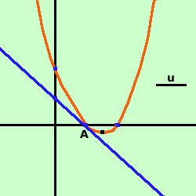

|
Data la parabola y= x2 - 3x + 2 trovare le equazioni delle tangenti condotte alla parabola dal suo punto di ascissa -1 Soluzione:  prima disegniamo la parabola e poi calcoliamo le coordinate del punto: essendo l'ascissa -1 basta sostituire alla x della parabola il valore -1 per trovare l'ordinata del punto y = (-1)2 - 3(-1) + 2 = 1 + 3 + 2 = 6 quindi il punto (chiamiamolo A) ha coordinate A(-1;6) considero il fascio di rette passante per il punto A(-1;6) y-6 = m[x-(-1)] y -6= m(x + 1) y = mx + m+6 Faccio il sistema fra il fascio di rette e la parabola y= x2 - 3x + 2 Sostituisco il valore della y dalla prima equazione nella seconda ed ottengo l'equazione risolvente mx + m + 6 = x2 - 3x + 2 0 = x2 - 3x - mx - m - 6 + 2 meglio x2 - 3x - mx - m - 6 + 2 = 0 usando la proprieta' riflessiva dell'uguaglianza: se a=b anche b=a raccolgo ad equazione di secondo grado x2 - x(3+m) - m - 4 = 0 questa e' l'equazione risolvente il sistema: per avere due soluzioni coincidenti devo porre il delta dell'equazione uguale a zero Ho a = 1 b = -(3+m) c = -m -4 9 + 6m + m2 + 4m +16 = 0 Se non seiconvinto dei segni del quadrato ferma il mouse sul risultato metto in ordine m2 + 10m + 25 = 0 Come ti avevo detto e' un quadrato perfetto (essendo il punto di tangenza formato da due punti sovrapposti in cui calcolare le tangenti la soluzione e' doppia); risolvo ed ottengo: (m + 5)2 = 0 m = -5 (doppia) Ho quindi la tangente y = mx + m+6 y = (-5)x + (-5) + 6 y = -5x + 1 |